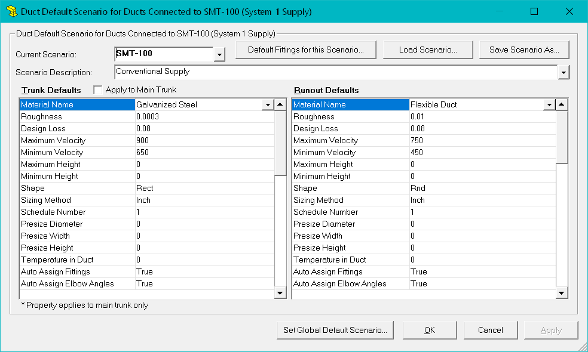

Duct Defaults for System (Manual D Ductsize) |
  
|
Duct Defaults for System (Manual D Ductsize) |
|
To open this dialog: Right click a duct, then from the popup menu click General Duct Settings, then Duct Defaults for this System.
The duct must be connected to a system that includes a main trunk for this menu item to be available. This dialog is where you define the default property values for trunks and runouts that will be connected to the system. The default values that you define on this dialog are applied to a duct at the time that you connect it to this system.

Current Scenario: Shows the name of the main trunk object on the drawing for which to edit the defaults. To change to the defaults for a different duct system (such as the return system if you are working on the supply), you need to have already drawn a main trunk for that system. For example, if you are working on the defaults for the supply ducts for system 1 and would like to instead edit the defaults for the return ducts, you must already have a Return Main Trunk object on the drawing for system 1.
Note that you have edited the defaults for one scenario and would like to change to another scenario, you may click the Apply button to save your changes and keep this window open.
Default Fittings for this Scenario: Opens the Default Fittings dialog, where you can define default fittings that will be applied to ducts connected to this system that have the Auto Assign Fittings property set to True.
Load Scenario: Loads a previously saved duct default scenario file (*.dds). The dds files contain all the property values on this dialog so that you can maintain a scenario for each kind of duct layout you use.
Save Scenario As: Saves the current property values into a duct default scenario (*.dds) file so you can load it for another system later or assign it to a global default scenario. Note that you should use a different file name from any of the DDS files that are included when you install Rhvac, since those files will be overwritten whenever you install an update.
Scenario Description: Defines the name or description you want to use for the current scenario of property values, such as "Conventional Supply," or "Plenum with Flex Duct."
Trunk Defaults, Runout Defaults: Lists the properties that are available to be set as defaults. The values you enter are applied to a duct at the moment you connect it to the system.
Apply to Main Trunk: When checked, applies the trunk defaults to the main trunk of the system.
Set Global Default Scenario: Opens a dialog that lets you define the duct default scenario file that you want to be applied to the three different types of main trunk objects whenever you drag and drop one of them from the Catalog Browser.
OK: Saves the changes you made for the current scenario and closes this dialog. The data is saved in the main trunk object of the system.
Cancel: Closes this dialog without making any further changes.
Apply: Saves the changes you made for the current scenario and keeps this dialog open. Clicking Apply can be useful if you want to switch to a different scenario after making changes to the current one.